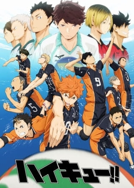

1°SEASON
HOME PERSONAGGI

IL PICCOLO GIGANTE
Shouyou Hinata, alto solo 1.62 m, si pone come obbiettivo quello di diventare “Il piccolo Gigante” della pallavolo.
Durante le scuole medie, affronta il torneo interscolastico ma lui e i suoi compagni devono accettare la sconfitta di fronte a una forte squadra guidata dal formidabile pallegiatore, Kageyama Tobio.
Desideroso di prendersi la rivincita su Kageyama, Shouyou continua a praticare la pallavolo anche alla sua entrata alle superiori Karasuno,
dove però si ritrova in squadra proprio con Kageyama.
I due, dopo dei litigi iniziali, sviluppano un'innata complicità e creano la "veloce stramba".
La loro prima partita è un'amichevole contro la Aoba Johsai,dove si trovano tutti gli ex compagni di Kageyama.
Vincono l'amichevole per la mancanza del capitano della Aoba Johsai, Toru Oikawa che era anche l'ex mentore di Tobio.
La loro seconda partita è sempre un'amichevole ma questa volta contro la Nekoma.
Ma questa volta perdono.
→2°STAGIONE